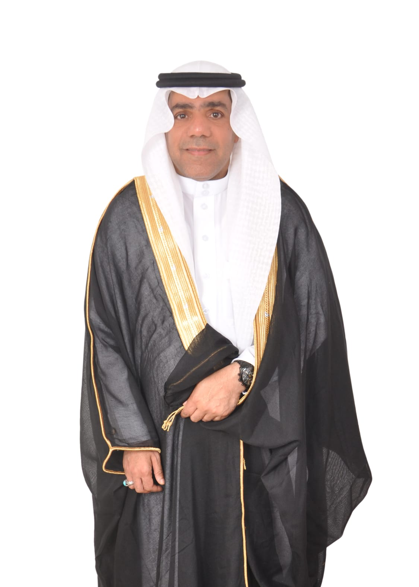
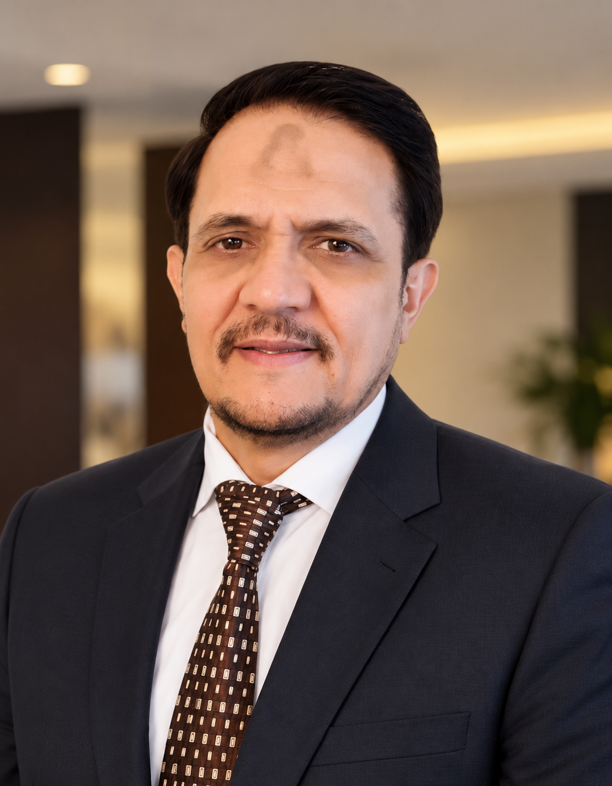

ABOUT US
People behind better operations.
Practical experience. Real world operations. A consultancy team focused on improving warehouse and logistics performance.
20+
Years of
Industry Experience
FMCG
Logistics &
Warehouse Expertise
KSA
Regional
Operational Knowledge
Results
Driven by
Practical Solutions
OUR TEAM
Consultancy Team
Experience across warehouse operations, logistics, FMCG and SAP-enabled processes.
MS
COMPANY CHAIRMAN
AbdulAziz Al-Oufi
CONSULTANT PROFILE
Abul Hassan Khan
More than 20 years of hands-on experience in warehouse and logistics operations, with a strong background in FMCG, team leadership and operational excellence across Pakistan and Saudi Arabia.
Focused on practical solutions that improve efficiency, strengthen operational control and support sustainable performance improvement.
01
Almajdouie Logistics (KSA)
8 years of logistics experience in Saudi Arabia, supporting warehouse, business development and operational activities.
02
Inkan Holding (KSA)
1 year of experience in transport operations and business development, with a focus on improving performance and operational efficiency.
03
Silk Road Logistics (KSA)
2 years of experience in corporate business development, bringing in new clients and supporting the growth of transport operations.
04
Lakson Tobacco Company (PAK)
16 years of management experience in Tobacco Leaf Procurement as classified Grader (Asian Gold Medalist), including tobacco cleaning and classification in the Redrying Plant.
AWARDS & CERTIFICATIONS
Recognition & Credentials
LEADERSHIP | EXCELLENCE | CONTINUOUS IMPROVEMENT
2023
Global Inspirational Leader Award
Top 200 Inspirational Leaders of the World
2024
World Leading Leader Award
Global Business Conclave at the UK House of Lords
2015
Certified Lean Six Sigma Professional
Process improvement & operational efficiency
1985
Tobacco Classified Grader
Asian Gold Medalist
JR CONSULTANT
Maryam Sohail
SAP consultant with experience across SAP S/4HANA implementation, warehouse operations, inventory management and business process support.
Focused on improving warehouse processes through SAP-enabled operations, structured documentation, testing, user support and practical process improvement.
01
SAP S/4HANA
Experience in implementation support, configuration, testing, UAT and post-go-live activities.
02
Warehouse Operations
Experience across inbound, outbound, inventory and warehouse execution processes.
03
Inventory & Quality
Inventory management, physical inventory, cycle counting and quality-related processes.
04
Business Process Support
Functional documentation, SOPs, training, process analysis and user support.